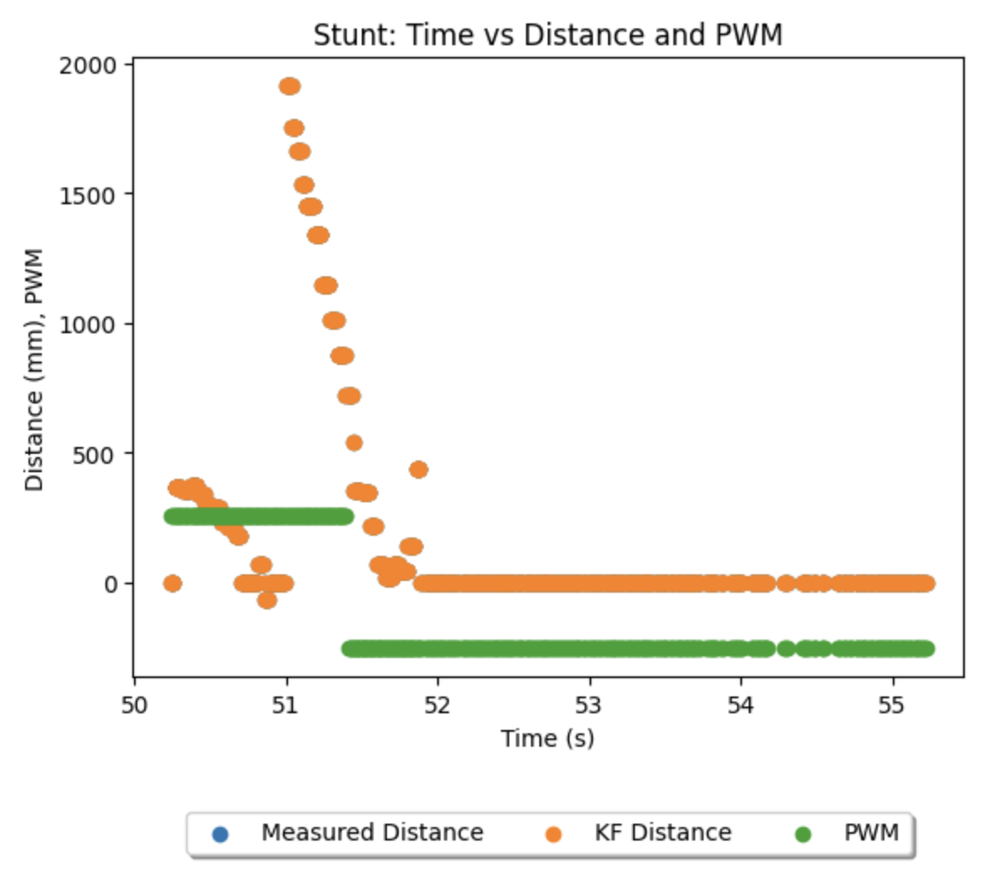
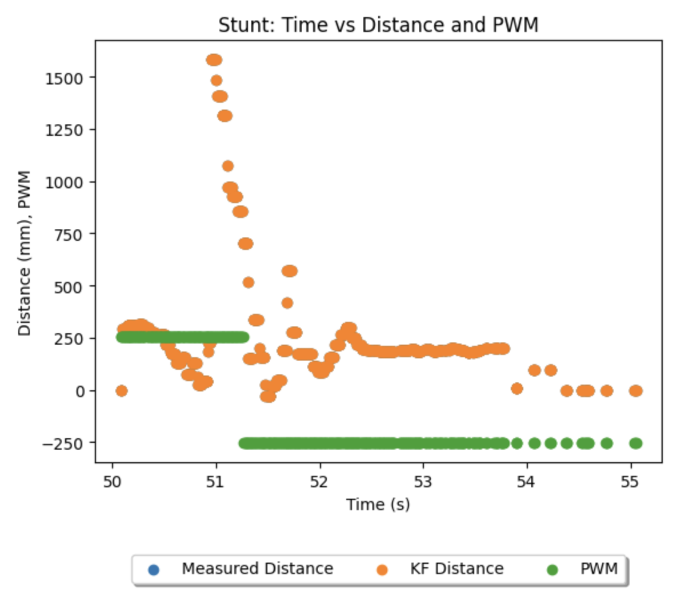
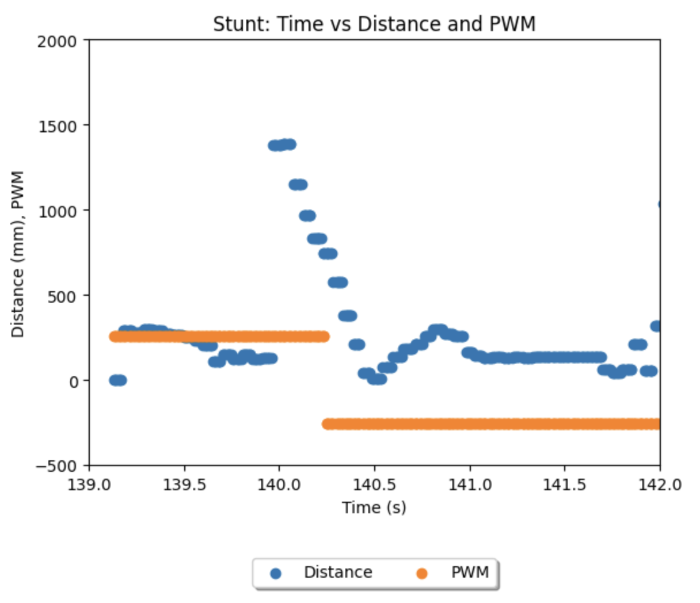

Lab 8
Objective:
In this lab, I conduct a high-speed stunt using my robot. The goal is to have the robot speeds toward a wall and, when the kalman filtered extrapolation of TOF readings determines it is on the stunt pad, a flip is induced, and the robot speeds opposite the initial direction of travel.
Stunt Scripting
To achieve this stunt, as with all labs, I first created a new bluetooth command to trigger the sequence remotely. The script on the jupyter notebook side was taken directly from my previous labs, as no processing is done off-board - it only relays the stunt command, and collates data sent over bluetooth for visualizing after the stunt. The stunt function on the arduino, consists of three short parts: driving towards the wall, the flip sequence, and driving away. I drive towards the wall at max PWM, then reverse the direction of max PWM and brake shortly to flip when the wall distance is correct, and finally continue the max reverse PWM to return to the start line.
The kalman filter, whos (abstracted here) code was taken from my lab 7, heavily favored the sensor input. As my sampling rate did not significantly change, the filter's matrices remained the same.The stunt body runs a prediction step when new data does not come in, finding the gradient between the previous two sensor values and multiplying by the time interval before passing this extrapolated sensor value into the kalman filter. I arrived at the delay timings for each step in the flip sequence through trial and error, watching carefully how much 'kick' I would generate at the reversal moment, and watching how much the robot laterally pivoted during its flip. I added the proximity variable, and the 800mS initial flip-free period to eliminate the arbitrary readings generated by the TOF until the robot is within two metres of the wall. Starting from the line at four metres, at 255 PWM on a full battery, it took about that long to close in on the pad. The speed variable is sent over bluetooth to mark the flip.
Stunt Outcomes
Despite having attempted the stunt over 50 times across multiple days, I could not successfully flip the robot. I had a number of attempts where the 'kick' of the robot on reverse PWM reached ~45 degrees, but never up to the ~60 degrees needed to invert. No stunt data indicated an issue with the kalman filtered distance sensing, or execution of the flip body. Upon analysing the data from the stunts and watching their recordings, I hypothesise three possible explanations.
1. To flip, there must be a large deceleration on the pad. I noticed in a number of recordings my robot would lock-up the wheels and skid rather than actually reversing the rotation. This is likely due to a lack of mechanical grip betwen the wheels and the pad - either the wheel grooves had been worn too smooth, or the pad was too dusty. As a result, the robot would slide over the rest of the pad and often impact the barrier rather than flipping. Sometimes, I would also see the robot do a lateral spin, likely because there was more grip on one side of the robot than the other.
2. To flip, the reversal in rotation of the wheels have to be immediate. If when commanded to reverse rotation, a motor first coasts to a stop then reverses, the deceleration would not be significant enough to invert. While I incorporated slow decay into my motor control, and visually confirmed that off the ground the robot is arresting rotation immediately, it would often seem that on the ground the motors were coasting rather than braking.
3. To flip, the delay timings have to be just right for the surface conditions. It is possible I never assigned the perfect values. To be thorough and exhuastive, I brute forced every combination of kfDistance [600, 1000] in steps of 100 and flip delay [0, 500] in steps of 100. These two variables are key to achieveing the flip motion itself, and some combinations yielded better results than others.
Stunt Media and Data
Despite not having a successful stunt, I had a number of notable attempts, and collected their data:
Notable Run 1
This run reached ~30 degrees of kick, and had the least sliding problem on the matt of all the runs. As the data shows, it correctly reversed PWM at 1.4 seconds into the stunt at about 600mm from the wall. It returned to the line after 2.3 seconds. It lost TOF readings after the reversal, but the readings on approach were correct, and the kalman filtered values overlapped with the measured.

Notable Run 2
This run showcases the consequence of the lateral spin due to unequal grip, as it consumes the impulse needed to invert. As the data shows, it correctly reversed PWM at 1.3 seconds into the stunt at about 500mm from the wall. It returned to the line after 4.2 seconds. After the spin and some wall-assisted flips, the TOF readings again expectedly became unreliable as it looked out into the hallway after 'flipping'.

Notable Run 3
This run, from before incorporating the Kalman filter, showcases the issue of locking up and sliding off the pad and into the wall. It returned to the line after 2.6 seconds. As the data shows, it correctly reversed PWM at 1.2 seconds into the stunt at about 600mm from the wall.
